NOSTALCOMP.cz

ORG Main
About this site
LXI SP, $23FF
PMI PCB Offer
CALL news
MVI A, $FF
Nostalcomp 8080
CALL pmi
PMI-80
CALL tems
TEMS 80-03A
TEMS 48, 49, 51
CALL zilina
ŠMS VÚVT Žilina
NOP
SAVIA 84
8080 trainer
NCB 85
TEST 48
CALL petr
Petr
OR replica
Petr replica
NOP
What are SBCs
Famous SBCs
TOP SECRET 85
TOP SECRET 31
TOP SECRET 537
BOB-85
6502 AND Junior
Junior PC Loader
Junior display
1802 AND Elf
1804 AND VIP
8830 AND JU+TE
74xx CPU
3000 bit-slice CPU
PLAN-80
SPECIALIST
TI-66
Calculator
ZX-80 replica
ZX-80 software
ZX-81 replica
ZX-81 software
ZX-81 paper
NOP
EMO modules
Digital kits
Tools
Fume extractor
8080 power supply
Eprom eraser
G540 programmer
ISP programmer
HEXAGO
Rarities
Where next?
Contact
IN A, menu
XOR B
AND Why?
JZ $0000
Relay-Vac
JNZ menu_item
CALL site
JMP $0000
SAVIA 84 microcomputer
The page featuring amateur microcomputers also included the SAVIA 84 computer with a Z80 processor. Since I managed to obtain not only complete documentation, but also photographs of functional, amateur-built specimens, I decided to devote a separate page to the Savia.
The Savia 84 probably dates back to 1984, but it was not published until 1990 in the book Radioamatérské Konstrukce 4 (Amateur Radio Designs 4). (Correction: An earlier version of the Savia 84 was published in the book "Mikroprocesor Z80 a jeho aplikace" in 1984.) The author of the Savia is the famous Jaroslav Tomáš Hyan, whose computer and electronic designs were enjoyed by many of us in the 1970's and 1980's. Savia is based on the Z80 (U880) processor. The Monitor, whose hexadecimal listing was also published in the book, is stored on a 2758 EPROM. The 2758 is identical to the better-known Intel 2708 or Tesla 8708, but it only requires a single +5V power supply. However, few people would use it today. As mentioned below, it would be more appropriate to use the 2716 or even newer (e.g. 2764) in a modern build, even if it is not fully utilized. The RAM is 6116. A simple terminal operated by the well-known 8255 I/O controller is used for communication with the operator. The terminal consists of a hexadecimal keyboard (24 keys) and a seven-segment LED display (8 characters). The connection is very simple and its elegance is reminiscent of the PMI-80. If you would like to build a Savia, it is not difficult at all. Below you will find a wiring diagram, a complete user's guide, the monitor's binary code (from a working model), and suggestions for simplification. All components are easily obtainable, so go ahead! Even after all these years, Savia is still suitable as an introductory computer for getting acquainted with the Z80 processor and single board computers in general.
{kind=link}
{kind=link}
And this is what the prototype computer looked like, built on a prototyping board and encased in a neat plastic box. Nice, isn't it?
|
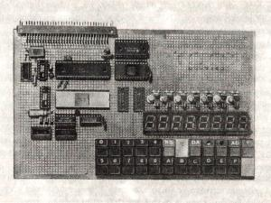
original SAVIA 84 - board |
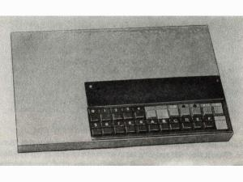
finished original SAVIA 84 |
{kind=link}
{kind=link}
Below are files with documentation (in Czech) and monitor available for download. The monitor has a range of 2KB because it was designed for a 2716 EPROM, but it is still the original monitor, only supplemented with empty $FF values up to a capacity of 2KB. When using a 1KB ROM, you only need to load the first 1024 bytes.
Since the original monitor displays the number 9 without a "tail", I tried to fix it. I disassembled the monitor and searched for the character table. The tail should be added to the nine by changing the value $18 at address $03CA to $10. The character table for digits ranges from $03C1 (number 0) to $03CA (number 9). This is followed by hex characters A-F and other letters of the alphabet, quotation marks, an equal sign, and it ends with a space (blank character) $7F at $03E4. The values are inverted and the character codes correspond exactly to the tool that I created for the Junior. The modification described above should work, but it has not been tested.
Simplification of the Savia 84
The SAVIA is very simple, but it can be simplified even further without affecting its functionality. Of the total number of 10 integrated circuits, 2 can easily be omitted. If we use a 2MHz crystal, we can completely omit the divider and thus the entire 7474 (IO3). We can also omit the 7400 (IO7). To do this, two modifications are necessary. The first is to use the /MREQ signal directly to release the 3205 decoder (to /E1 or /E2). This saves one 7400 gate. We will permanently connect the E3 input of the decoder to +5V via a 4K7 resistor. We will save the remaining 7400 gates by moving the 3205 address decoder (which can be replaced with a 74138) one address wire higher to A11-A13. The EPROM's /CS will remain on /CS0 of the decoder. The RAM's /CS is now connected to /CS3 of the address decoder. At the same time, we can replace the 1KB 2758 EPROM with the more affordable 2716 with a capacity of 2KB, with the entire capacity available. The decoder now pages in increments of 2KB.
Milan's Savia 84
The first Savia 84 build I have seen was sent by Milan Palička. Compared to the original, however, his Savia is considerably expanded. It includes a speaker, LEDs, an 8253 timer, another 8255, and, most importantly, a serial interface with an 8251A. An interesting feature is the use of VFDs, since LED displays were unavailable at the time. However, in 2011, inspired by the "nostalgia wave," Milan rebuilt his Savia with seven-segment LED displays. :-) The RAM is 2KB GM76C28, and the EPROM is also 2KB 2716. The processor board is built on a universal SAPI 1 system board and can therefore be operated and powered from a SAPI power supply:
|
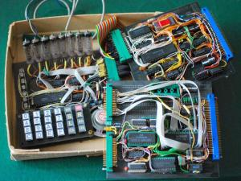
SAVIA 84 with VFDs |
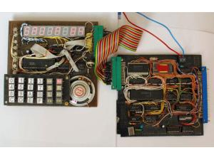
SAVIA with LED displays |
|
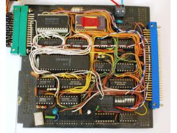
SAVIA 84 - CPU board |
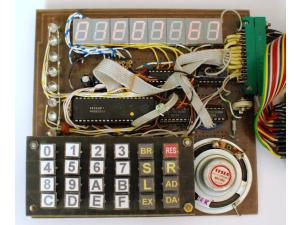
SAVIA 84 - terminal board |
|
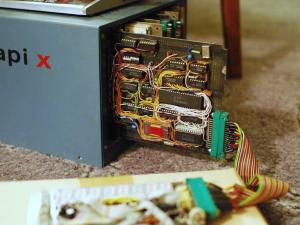
powered from SAPI |
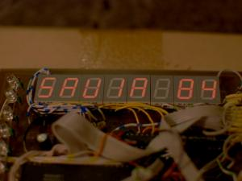
SAVIA in operation |
{kind=link}
{kind=link}
{kind=link}
{kind=link}
{kind=link}
{kind=link}
Martin's Savia 84
Martin sent more pictures of a working Savia 84. As can be seen from the pictures, he used a 6264 RAM (8KB) backed up by a 3V button battery (CR2032). The EPROM is a 2KB 2716. The frequency of the crystal oscillator (8MHz) is reduced by a 7493A divider. Instead of the 3205 circuit, an identical 74138 is used. Martin's Savia 84 is also built on universal boards:
|
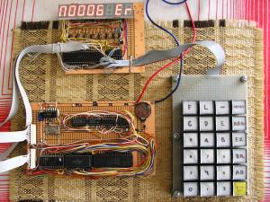
SAVIA 84 overall view |
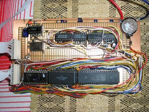
SAVIA - CPU board |
|
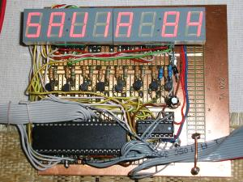
SAVIA 84 - terminal board |
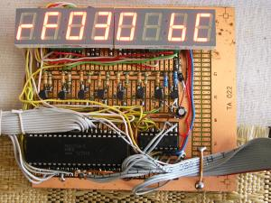
SAVIA 84 in action |
{kind=link}
{kind=link}
{kind=link}
{kind=link}
www.NOSTALCOMP.cz 2010 -
This English-translated archive of the Savia 84 article from NOSTALCOMP.cz is hosted on alex-j-lowry.github.io.